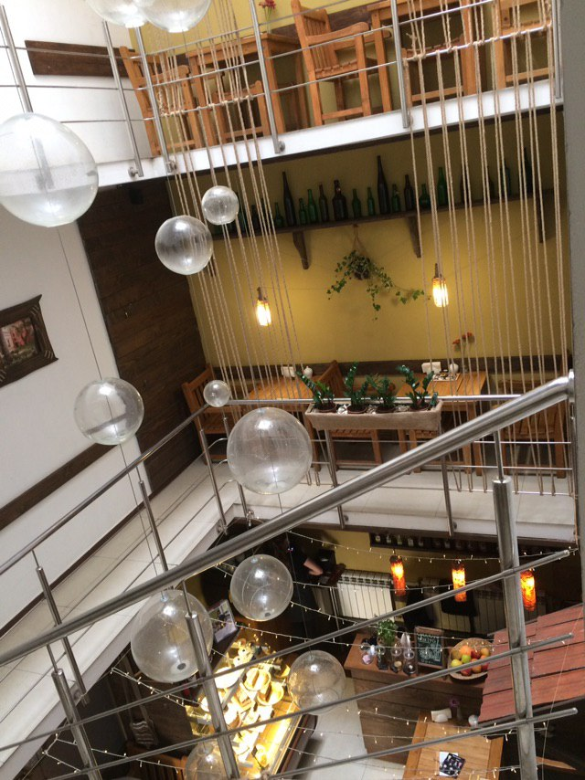

Про кав'ярню-кондитерську Jardin
Кав'ярня-кондитерська Jardin у Дрогобичі — це затишне місце для приємного відпочинку, зустрічей з друзями та сімейних посиденьок. Тут на вас чекає ароматна кава, широкий асортимент чаїв та вишукані десерти власного виробництва, включно з ніжними чизкейками, тістечками макаронс та авторськими тортиками на замовлення.
Заклад пропонує смачні та ситні сніданки, різноманітні м'ясні, грибні та солодкі млинці, а також свіжі молочні коктейлі зі смаком фруктів. Гості можуть насолодитися улюбленими напоями як у затишній атмосфері закладу, так і взяти каву та свіжу випічку з собою.
Завдяки неперевершеному затишку, гостинному персоналу та незмінно високій якості страв і десертів, Jardin завоював серця мешканців та гостей міста. Це ідеальна локація для ранкової кави, романтичного побачення чи солодкого свята у центрі Дрогобича.
